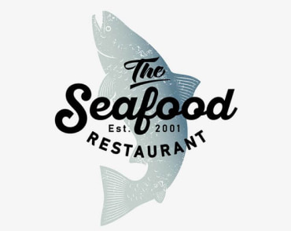
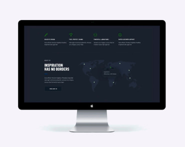

-

Technocrack Strona internetowa -

Grafika New Orlean vs Golden Star Dizajn -

Restauracja Seafood Aplikacja -

Projekt Prime Marketing -

Projekt Boxes Aplikacja -

Inspiration has no Borders Strona internetowa -

Magazyn Limited Edition Dizajn -

Projekt LAB Marketing -

Growing Business Aplikacja